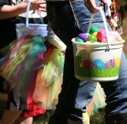
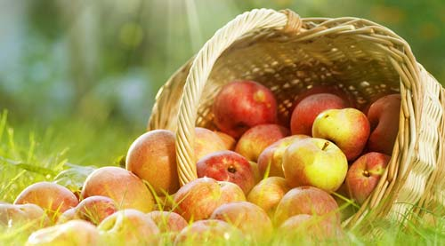

Come to our farm the Easter egg hunt! Come early and enjoy our other activities.
We bring a selection of our fresh produce, pies, donuts, cider, jams, syrups, and other seasonal favorites. Please call the farm, (360) 491-7328, a week ahead and we’ll bring along any special requests.
Visit our booth at the fair!
Some of the yummy things we make are: funnel cakes, elephant ears, cider shakes, and ice-cold cider slushies. Our apple and berry cider’s are sold from our fountains. We bring our caramel apples and baked pies!

Celebrate Washington’s Apple Harvest with us at the farm.
Come pick your own pumpkins! Enjoy a day in the country amid the sweet aroma of apples. Sample our fresh picked crunchy apples. Bring the children – visit our farm animals. Every weekend enjoy our animal train, face painting, games, petting farm, pony rides, and wagon rides to & from our pumpkin patch from 10 am to 4 pm. We have our National Award Winning Cider, lots of good things to eat, bbq, apple crisp, caramel apples, apple pie, cold & hot spiced cider, berry cider, cider donuts, apple cake, and our famous Apple Fritters.
On the last weekend of Apple Fest this year, our farm becomes haunted to celebrate this spooky occasion!
Come and see our beautiful Christmas lights! The farm is transformed into an extravagant WINTER WONDERLAND.